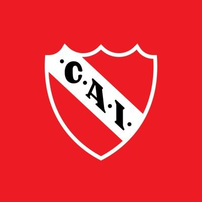
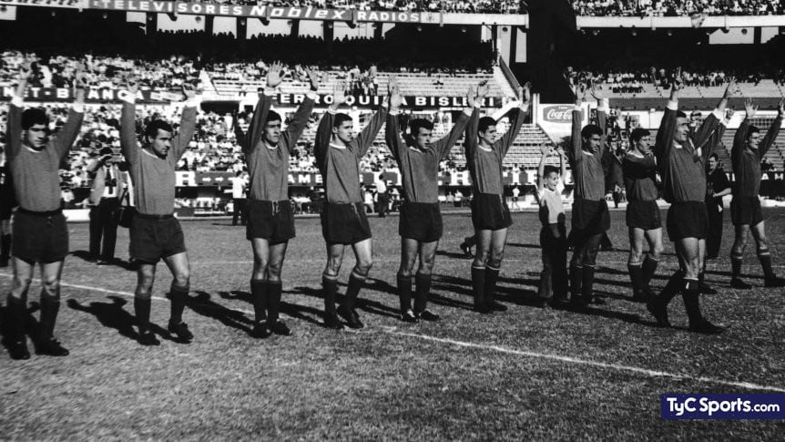
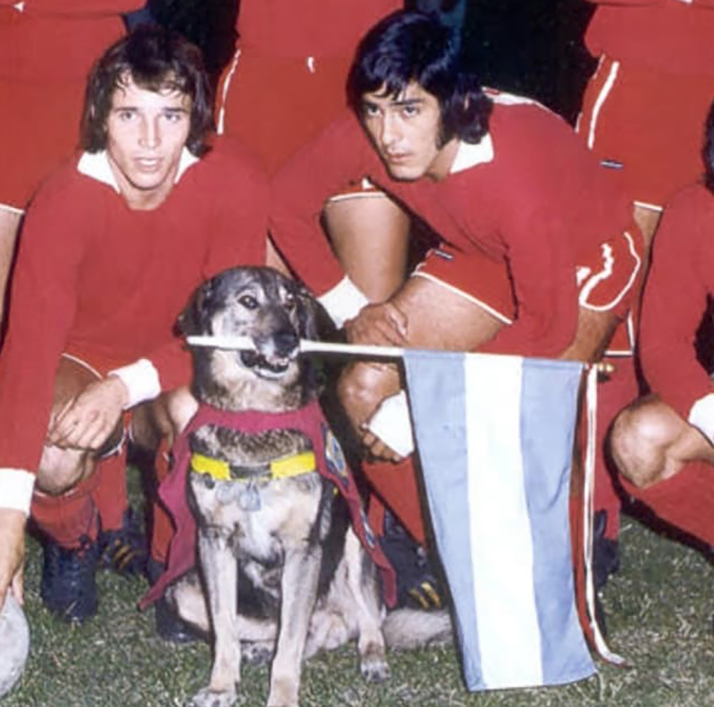
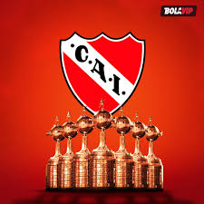
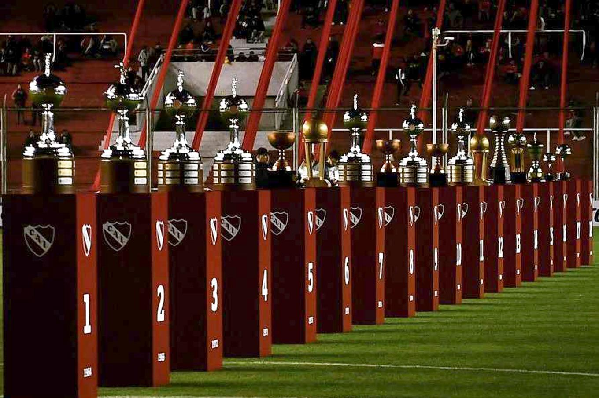
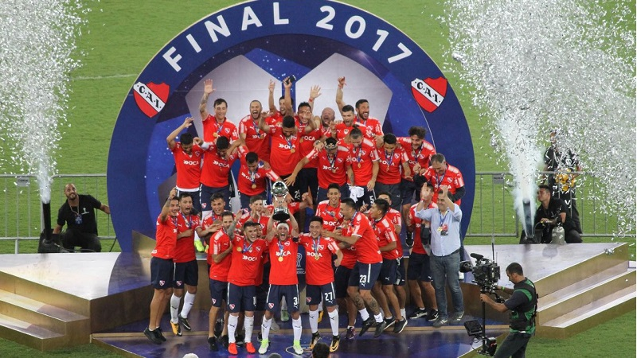
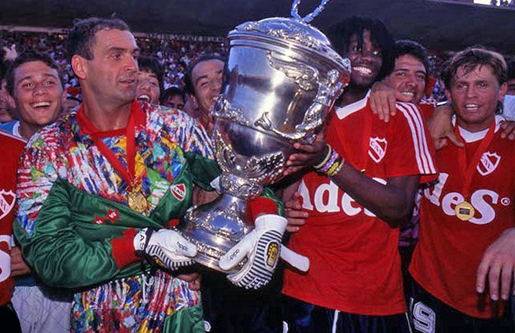

El Club Atlético Independiente, o simplemente Independiente, es una entidad deportiva y educativa argentina con sede y estadio en la ciudad de Avellaneda, dentro del Gran Buenos Aires. El club es reconocido principalmente por su equipo de fútbol profesional, que juega en la Primera División de Argentina y es considerado uno de los cinco grandes del fútbol argentino. Independiente fue fundado el 4 de agosto de 1904 bajo el nombre de Independiente Foot-Ball Club, aunque su fecha de fundación oficial es el 1 de enero de 1905. Originario del barrio de Monserrat en la ciudad de Buenos Aires, se trasladó a Crucecita en 1907 y luego a Avellaneda en 1928. Su equipo de fútbol logró el ascenso a la Primera División en 1911, y ha competido en la máxima categoría desde entonces, excepto en la temporada 2013-14, cuando descendió por primera vez. El Estadio Libertadores de América-Ricardo Enrique Bochini, inaugurado en 2009, es el recinto donde juega el equipo de fútbol masculino y, en ocasiones, el equipo femenino. Tiene una capacidad para 49.500 espectadores. La hinchada de Independiente es la tercera más numerosa del país.
Club Atlético Independiente




Trofeos
El Club Atlético Independiente ha obtenido numerosos títulos nacionales e internacionales que lo han consagrado como uno de los clubes más grandes de América y del mundo. Entre sus logros más destacados se encuentran:
- 7 Copas Libertadores: Independiente ostenta el récord de más Copas Libertadores ganadas, con títulos en los años 1964, 1965, 1972, 1973, 1974, 1975 y 1984. La racha de cuatro títulos consecutivos (1972-1975) es una hazaña que no ha sido igualada por ningún otro club.
- 2 Copas Intercontinentales: El club ha ganado dos Copas Intercontinentales, en 1973 (venciendo a Juventus) y en 1984 (venciendo a Liverpool), consolidando su reputación internacional.
- 2 Copas Sudamericanas: Independiente se coronó campeón de la Copa Sudamericana en 2010 y 2017, reafirmando su dominio a nivel continental.
- 1 Recopa Sudamericana: El club se coronó campeón de la Recopa Sudamericana en 1995.
- 16 Campeonatos de Primera División: Independiente ha ganado numerosos campeonatos de liga a nivel nacional, siendo uno de los equipos más laureados de Argentina.
- Otros títulos internacionales: El club ha ganado varias competencias adicionales, incluyendo la Copa Suruga Bank (2018), Copas Interamericanas y Copas Aldao.



Calendario de Partidos
- Sábado 8/2 - 20:15 - River - Independiente
- Miércoles 12/2 - 19:15 - Independiente - Vélez
- Lunes 17/12 - 19:15 - Platense - Independiente
- Sábado 22/2 - 17:00 - Independiente - Instituto
- Domingo 2/3 - 21:00 - Banfield - Independiente
- Sábado 8/3 - 17:00 - San Lorenzo - Independiente
- Domingo 16/3 - 16:00 - Independiente - Racing
Noticias
Contáctanos
Para más información, contáctanos a través del siguiente correo: contacto@independiente.com